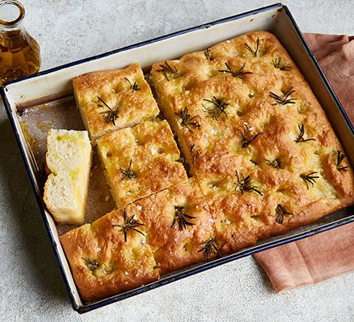

Focaccia

Focaccia with rosemary and other toppings like olives
1¾ cupswarm water (95 to 110 F)¼-ouncepack of active dry yeast3 tspsugar5 cupsbread flour1 tbspkosher salt½ cupsplus2 tbspolive oil- Cooking spray
To make the dough: In a small bowl, combine ¼ cup of warm water, the yeast, and 1 teaspoon sugar. Let stand until foamy, about 5 minutes.
In a stand mixer fitted with the dough hook, combine the flour and kosher salt. With the mixer on low speed, slowly pour in the yeast mixture, the remaining 1½ cups of warm water, ½ cup of olive oil, and the remaining 2 teaspoons sugar. Turn the mixer to medium-high speed and mix for 5 minutes. The dough will form a ball and pull away from the sides.
Spray a large bowl lightly with cooking spray and place the ball of dough in the bowl. Cover with plastic wrap and let rise in a warm spot until doubleds in size, about 1 hour.
Drizzle the remaining 2 tablespoons olive oil onto a rimmed 17 x 13-inch sheet pan. Can also be split between two pans instead (note that baking time will be reduced).
Punch down the dough to release the air. Place it on the prepared pan and press it out with lightly oiled hands to fill the pan, pushing your fingers into the dough to create small divots in it. Add some sliced olives, dried tomatoes or anything else you’d like to add.
Cover the pan loosely with plastic wrap and place the dough in a warm area to rise until pillowy, about 1 hour.
Meanwhile, preheat the oven to 425 F.
3 tbspolive oil1½ tspcoarse sea salt1 tbspfresh rosemary
To make the topping: Drizzle the top of the dough with 2 tablespoons of the olive oil, the sea salt, and rosemary.
Transfer the pan to the oven and bake until the top of the focaccia is golden brown, about 25 minutes. Remove from the oven and drizzle with the remaining 1 tablespoon of olive oil. Let cool for 5 to 10 minutes before cutting into 12 pieces.
Store in an airtight container at room temperature for up to 3 days.